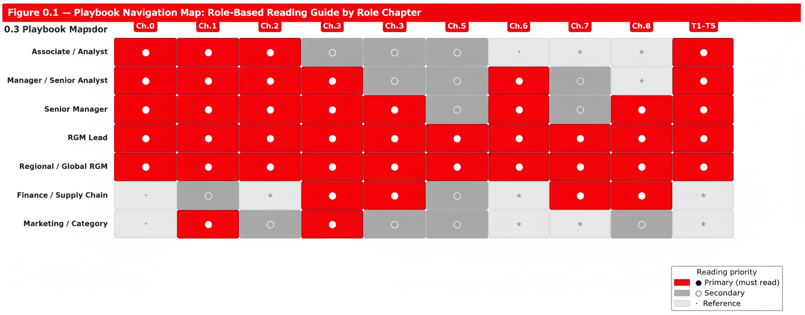
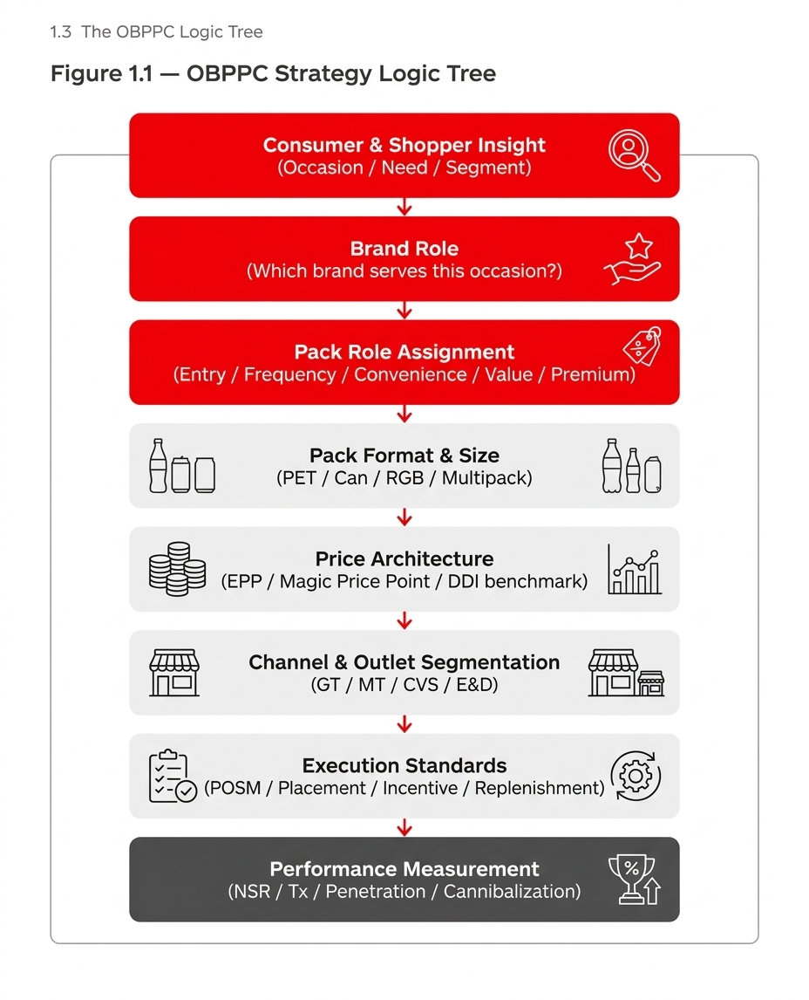
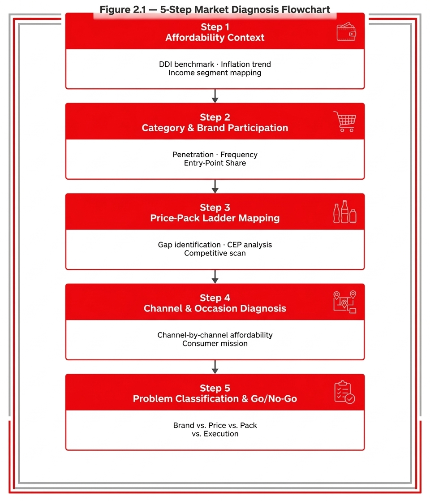

Overview
Read the full playbook as a branded website
This edition breaks the document into cleaner chapter pages, keeps the full tables and logic flows intact, and makes navigation much easier for workshop, review, and leadership-readout use.
Swire Coca-Cola RGM
A polished multi-page digital edition with Coca-Cola red-and-white branding, chapter-by-chapter reading, and packaged downloads for direct sharing.
Overview
This edition breaks the document into cleaner chapter pages, keeps the full tables and logic flows intact, and makes navigation much easier for workshop, review, and leadership-readout use.
Deployment
This Playbook is the definitive operational and training reference for Recruitment Pack and Affordability Pack strategy across all Swire Coca-Cola (SCC) markets. It is designed to be picked up independently by any RGM pr
Chapter 03 Chapter 1 Strategic FoundationRevenue growth in sparkling and non-alcoholic ready-to-drink (NARTD) categories is driven by two distinct but complementary mechanisms. The first is retention: protecting and deepening value with existing consumers throu
Chapter 04 Chapter 2 Market DiagnosisThe single most common failure mode in pack strategy is deploying the wrong solution to the right problem, or a correct solution to the wrong problem. Market Diagnosis is the structured analytical process that prevents b
Chapter 05 Chapter 3 Pack Design FrameworkPack design for Recruitment and Affordability purposes is an evidence-based process governed by six dimensions of evaluation. The three most common design errors are: (1) starting from an existing pack and applying a pri
Chapter 06 Chapter 4 Commercialization BlueprintPack approval is the beginning of the commercial challenge, not the end of it. The majority of recruitment pack failures in the Coca-Cola system have not been strategy failures — they have been commercialization failures
Chapter 07 Chapter 5 Performance Measurement & OptimizationEffective performance management for recruitment and affordability packs requires a three-horizon KPI architecture. Leading indicators identify early signals within the first 30 days; mid-term indicators confirm whether
Chapter 08 Chapter 6 Case Library Chapter 09 Chapter 7 Governance & Ways of WorkingRecruitment and Affordability pack decisions sit at the intersection of Consumer, Commercial, Finance, Supply Chain, Marketing, and Bottler interests. Without clear governance, three failure modes recur: (1) decisions ar
Chapter 10 Chapter 8 Tools, Templates & Appendix Chapter 11 Training Programme T1–T5: Five-Stage Certification ProgrammeThe RGM Recruitment Pack Training and Certification Programme is a five-stage, role-differentiated capability journey covering the full analytical and commercial skill set required to design, deploy, and measure Recruitm
Chapter 12 Assessment Question Bank Full Bank — Stages 1–5Questions 1–5 above are Stage 1 sample questions. The following complete the Stage 1 bank to 20 questions.
Chapter 13 T1-T5 Self-AssessmentInteractive stage-by-stage quiz and readiness check built from the original certification question bank and case brief.
Featured Figures

Figure 0.1 — Playbook Navigation Map: role-based reading guide by chapter

Figure 1.1 — OBPPC Strategy Logic Tree

Figure 2.1 — 5-Step Market Diagnosis Flowchart